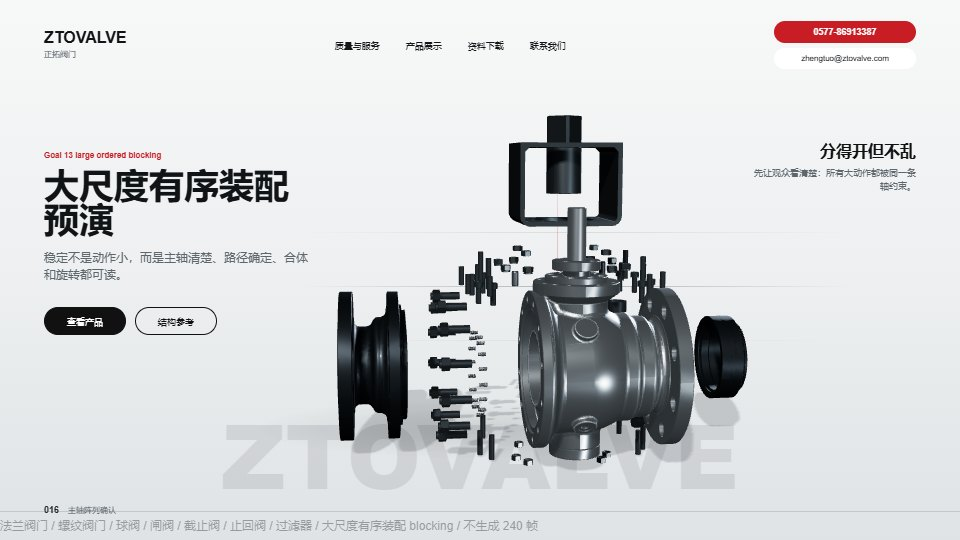
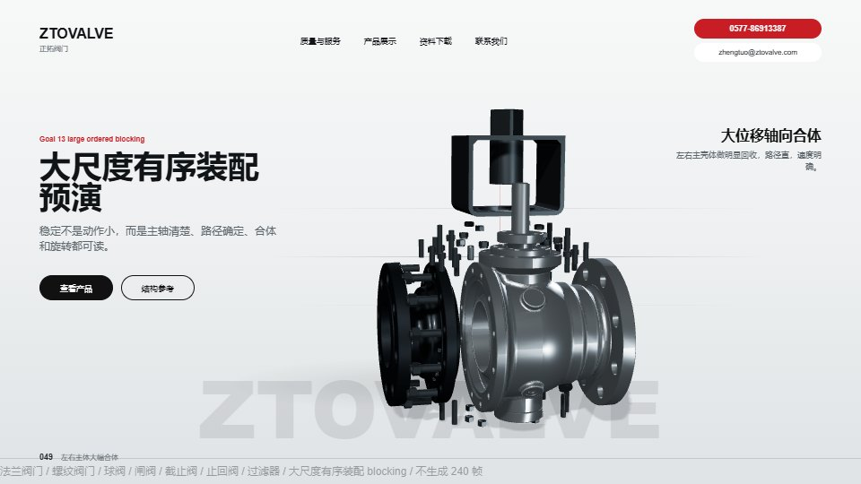
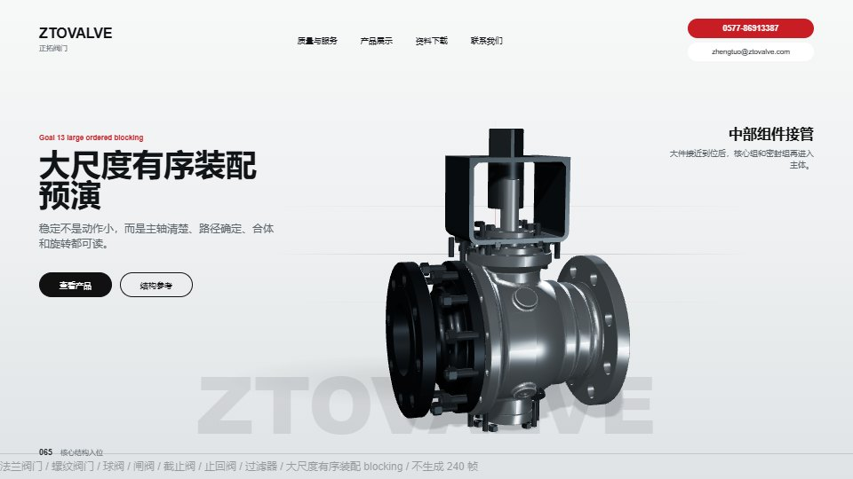
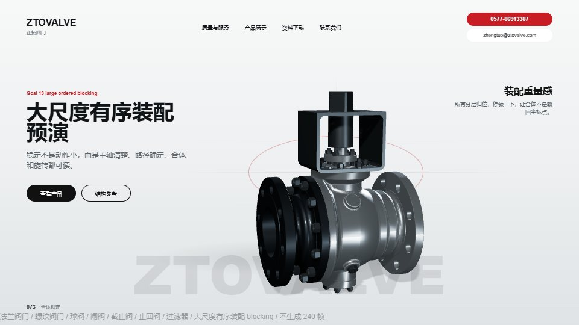
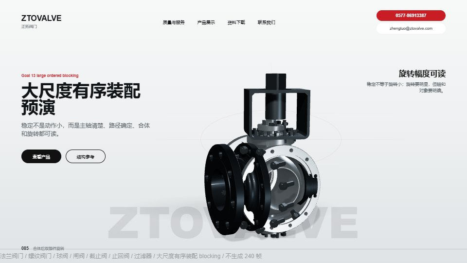
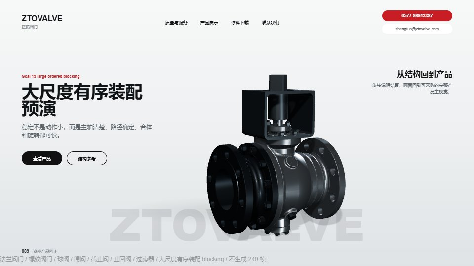

通过条件
大动作成立但不乱，主体合体方向明确，小件不抢戏，旋转可读，终帧回到首页商业图。
如果通过
进入正式镜头打磨：材质、光线、关键帧构图和 240 帧 AVIF 渲染方案。
如果不通过
回到 blocking 调整开场离散幅度、合体顺序、旋转对象或镜头距离。
Goal 13 / 96-frame large ordered blocking
这版把 Goal 13 改为低清 blocking：96 帧、12fps、8 秒。它验证“大尺度离散、轴向合体、 合体后明显旋转”的动画编排，不生成 240 帧正式序列，不替换首页。






大动作成立但不乱，主体合体方向明确，小件不抢戏，旋转可读，终帧回到首页商业图。
进入正式镜头打磨：材质、光线、关键帧构图和 240 帧 AVIF 渲染方案。
回到 blocking 调整开场离散幅度、合体顺序、旋转对象或镜头距离。